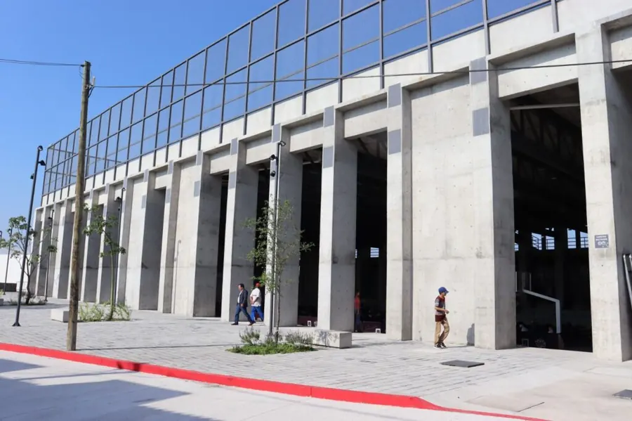

Espacios públicos
Unidad Deportiva "La Nopalera"
Espacio público comunitario construido por la SEDATU México. Ofrece un punto de encuentro para la activación física y la convivencia familiar.
Servicios y Actividades:
- Canchas de fútbol y básquetbol
- Clases de deporte y activación física
- Gimnasio al aire libre